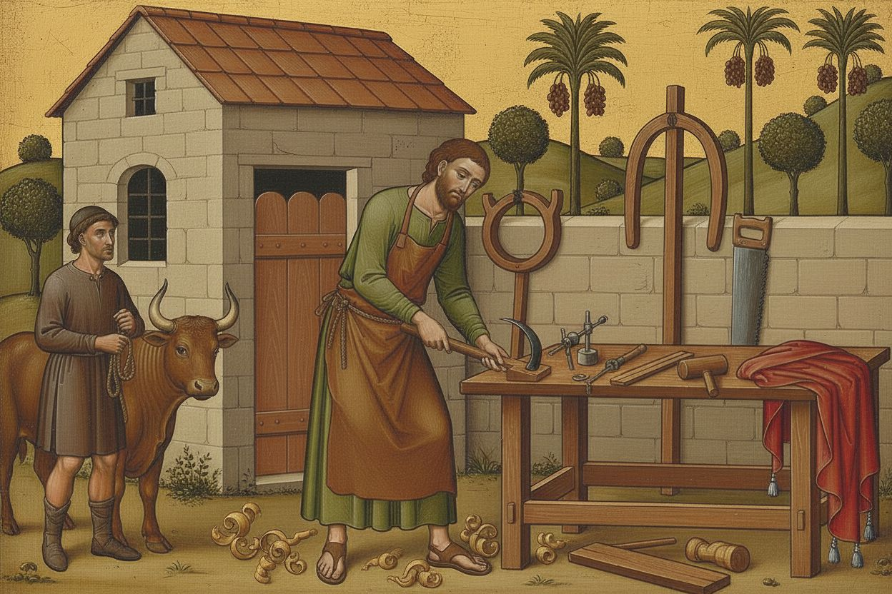
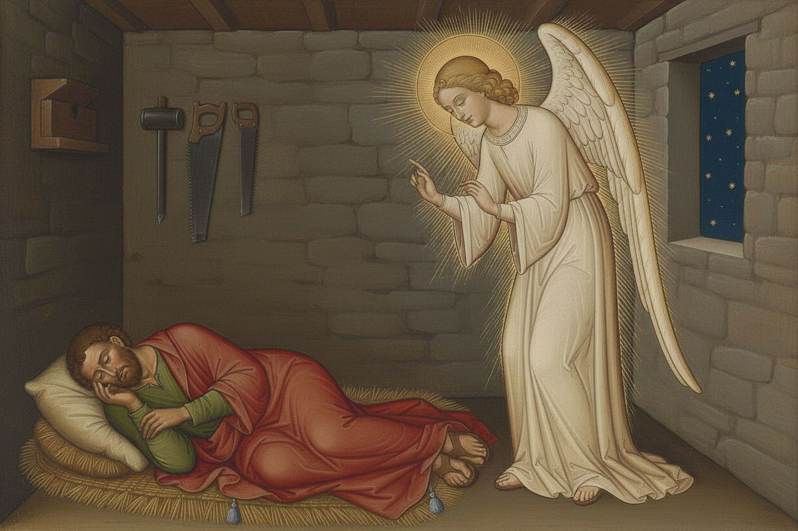
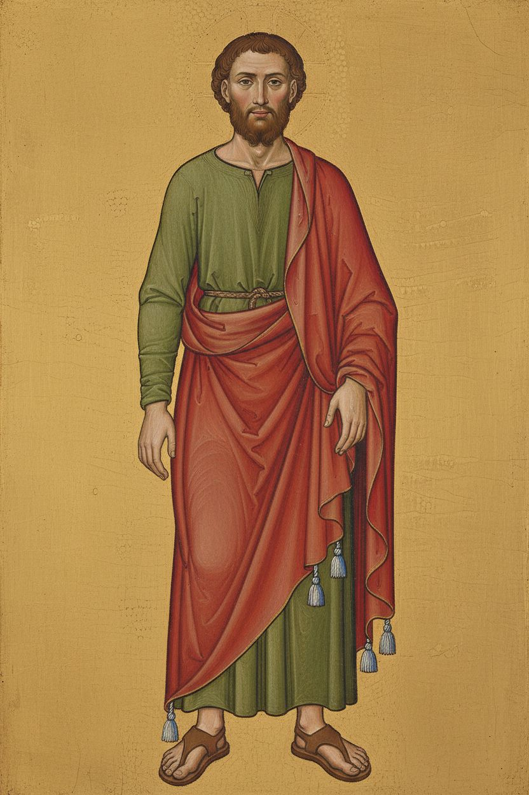
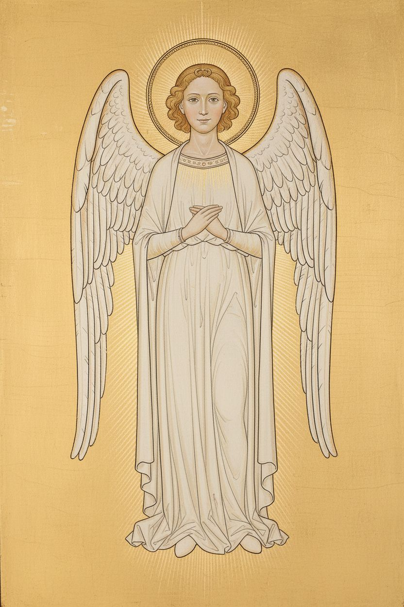

1. V dílně
nenamalováno


2. Anděl v noci
nenamalováno


Postavy v novém stylu




Styl
style: >- Czech Gothic panel painting in the style of the Master of the Vyšší Brod altarpiece (Bohemia, about 1350), tempera and gold leaf on wood: a shining gold background with a finely punched pattern, slender elegant figures standing in a gentle S-curve, soft rounded faces with high foreheads, almond eyes, small mouths and rosy cheeks, tender gestures, long flowing robes with deep soft folds and curling hems, stylised stepped rocks, small round trees and simple box-like buildings. Clear dark outlines and flat pure colours with gentle modelling, suitable as coloring-book line art. Joseph of Nazareth, a Jewish village craftsman in Galilee about 2,000 years ago: about thirty, strong and lean, a kind serious face, short brown curly beard and hair, bareheaded; a belted moss-green tunic, a large vermilion-red mantle with a white-and-blue tassel at each of its four corners, leather sandals. Mary: about fifteen, a gentle oval face, light brown hair under a white veil, an ultramarine-blue mantle over a pale rose dress. Setting: Galilean and Judean hills as stylised rocks, small flat-roofed stone houses, olive trees and date palms. Day scenes, indoors and out, have no painted sky: everything behind the figures and hills is flat shining gold leaf. Only night scenes have a deep ultramarine sky with small gold stars. mood: tender, reverent, gentle, luminous, festive, calm palette: - '#D4A73A' - '#1F3F8F' - '#C23B22' - '#3F7A4E' - '#F4EEE2' - '#E8C4B8' - '#8A6A3E' - '#2A1F1A' negative: >- No text, no letters, no words, no watermark. No old grey-bearded Joseph, no pointed medieval hats, no Gothic churches or castles, no armour, no Christmas trees, no snow, nothing frightening. aspect_ratio: '3:2'